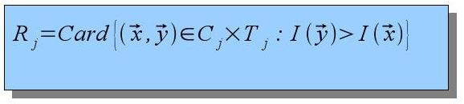

(here,
s
is the
scaling
parameter familiar from wavelet theory).
Ranklets are best understood intuitively in terms of
pairwise comparisons
of pixel
intensity values:

That is, in order to compute
R1 you should
construct all the possible pairs of one pixel in
C1 and one pixel in
T1, and
count in how
many such pairs the second pixel is brighter that
the first.
However,
the
counting does not need to be carried out explicitly: a more
efficient
algorithm exploits the relation of ranklets to the
Wilcoxon rank-sum test.